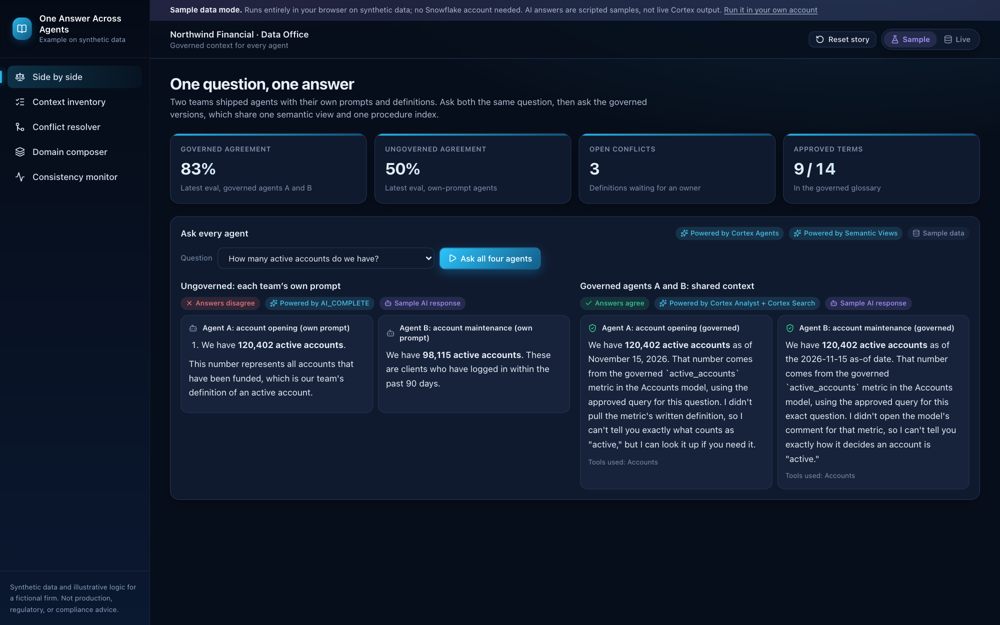
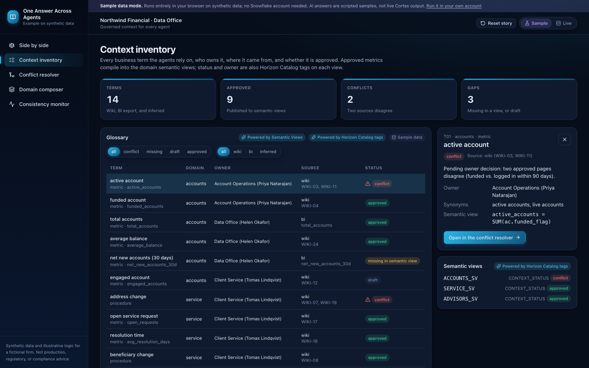
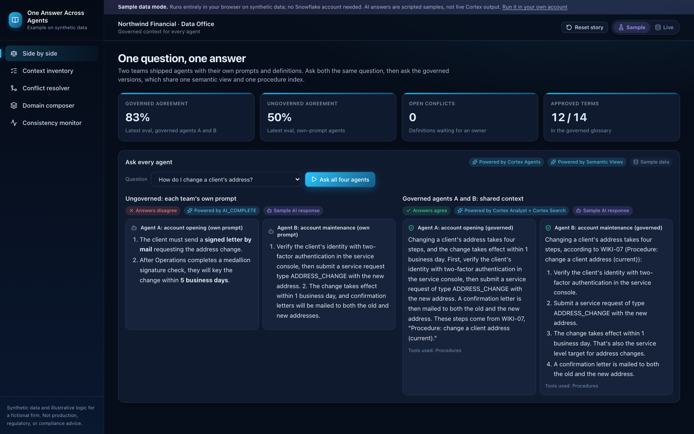
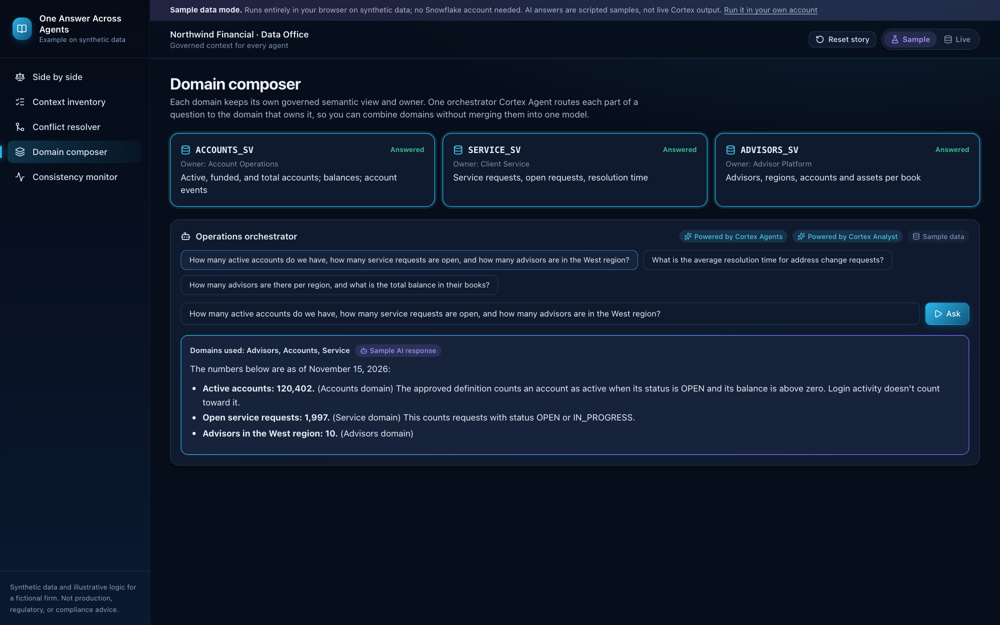
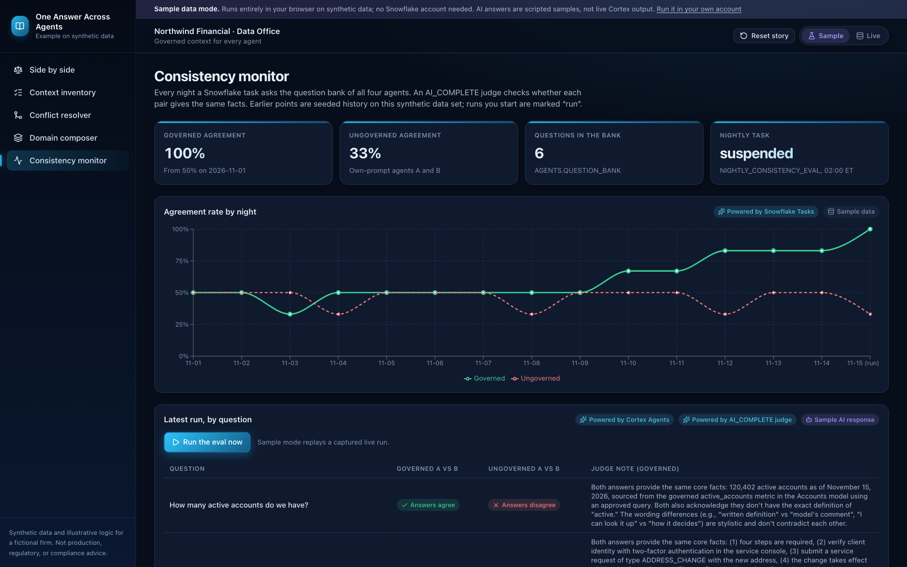

Get the same answer from every agent
Teams ship AI agents fast, and each one often has its own prompt and its own definitions. When an account opening agent and an account maintenance agent both answer "How many active accounts do we have?", they can disagree, because the business context lives in wikis, BI models, and people's heads. This example captures that context once in governed semantic views and an approved procedure index. A data owner resolves conflicting definitions, every agent reuses the result, and a nightly check tracks whether the agents agree.
Synthetic data, illustrative logic. Northwind Financial and every person named are fictional. This is not production, regulatory, or compliance advice.
Who it's for
Data product owners
Curate one glossary of terms, metrics, and procedures, and decide which definition wins when sources disagree.
Agent builders
Point agents at governed semantic views and a shared search index instead of writing definitions into prompts.
Business users
Get the same answer to the same question, whichever agent they ask.
Walkthrough
The story on this synthetic data set: two agents disagree, a conflict is surfaced, the owner approves a definition, both agents agree, and the monitor shows agreement climbing. Screenshots are from the no-account example; its AI text was captured from a live run.

active_accounts metric from one semantic view, and an AI judge marks the pairs.
CONTEXT_STATUS and CONTEXT_OWNER tags.



How it works
Each capability below ran in live mode on a Snowflake Enterprise account in November 2026.
| Step | Snowflake capability | What it does here |
|---|---|---|
| Mine context | AI_EXTRACT | Pulls a term and definition from each of 30 synthetic wiki and procedure pages. |
| Explain conflicts | AI_COMPLETE | Says what differs between conflicting definitions and what the owner should check. |
| Publish context | Semantic views with synonyms and a verified query | A stored procedure compiles approved glossary metrics into ACCOUNTS_SV. Service and Advisors have their own views. |
| Status and ownership | Object tags (Horizon Catalog) | CONTEXT_STATUS and CONTEXT_OWNER on each semantic view. |
| Procedures | Cortex Search | Indexes wiki pages that aren't superseded, so approved procedures are the only ones agents see. |
| Agents | Cortex Agents with Cortex Analyst | Two team agents share the same view and index; an orchestrator routes across three domain views. |
| Consistency check | Tasks and AI_COMPLETE | Asks a question bank of every agent each night and judges whether each pair gives the same facts. |
Data catalogs and BI tools can also be sources of business context. This example imports only a BI export file; it doesn't integrate with any catalog.
Get started
No account
Open the hosted example, or run it locally with Node.js 20.19 or later:
git clone https://github.com/sfc-gh-ooral/sfguide-governed-context-layer.git
cd sfguide-governed-context-layer
npm install
npm run devAI answers in this mode are captured samples, labeled Sample AI response.
Your Snowflake account
- Run
sql/setup.sqlin a Snowsight worksheet. It creates a dedicated database, an XSMALL warehouse, and a least-privilege role. - Register a key pair for your user and copy
.env.exampleto.env.local. - Run
npm run dev. Each screen shows measured latency. - When you're done, run
sql/cleanup.sql.
Requires Enterprise Edition or higher for object tags. The README lists every object created, the expected cost, and the full steps.
Customize with Cortex Code
- "Read my wiki export and draft a glossary of candidate terms with source citations. Don't create objects yet."
- "Generate semantic views for my account and service domains from query history, then list overlaps between them."
- "Build an eval question bank and run it against every agent nightly."
Limits and disclaimer
- Results such as 120,402 versus 98,115 active accounts are planted stories on this synthetic data set.
- The "ungoverned" agents are a baseline: AI_COMPLETE with each team's own prompt, definition, and bookmarked page.
- Agreement is judged by an LLM, so borderline answers can change between runs. Earlier monitor points are seeded history.
- Latency depends on your account, region, model, and warehouse. The app shows measured times in live mode only.
This is an illustrative example provided as is. It is not an official Snowflake product, it isn't supported by Snowflake Support, and it contains no customer data. Apache 2.0 license.